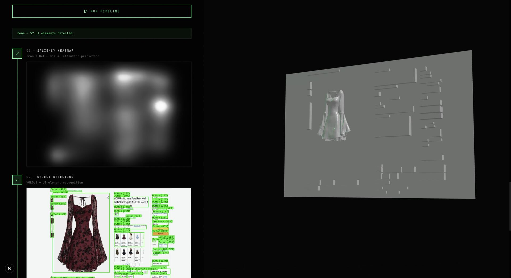
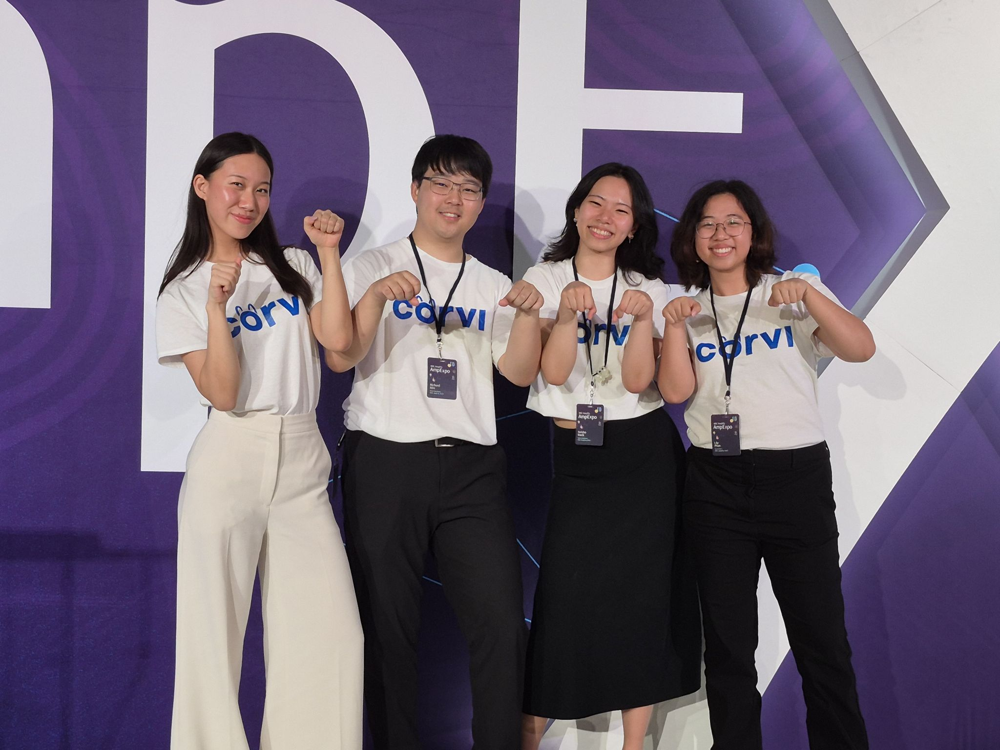
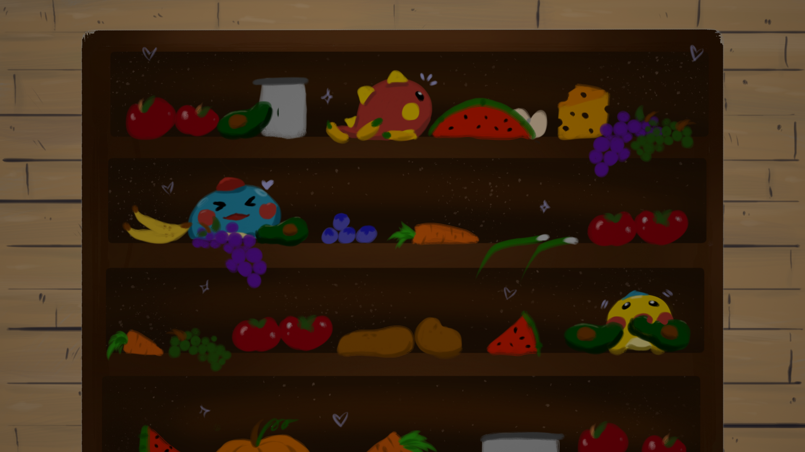

My Projects
Featured Projects

Haptic Vision
Designed a 5-stage ML pipeline (heatmap saliency, object detection, 2D-to-3D reconstruction) that converts screen content into a haptic-friendly 3D format for blind and low-vision users, in partnership with Haptic Vision Inc. Optimized inference time from 5 minutes to 30 seconds and built a CI pipeline reaching 85% test coverage across 2 microservices deployed on Railway.

CORVI
A web app built during RBC's Amplify program that uses AI and financial models to evaluate and recommend bonds for fixed income investment analysts. Built the full frontend for a tool projected to generate $60M in revenue — won 2nd place among 20 teams in the Technical Distinction competition.

ShelfConcious
Built at DeltaHacks XI: a smart grocery assistant that logs items from a photo using an object detection API, tracks shelf life, sends expiry alerts, and suggests recipes based on ingredients about to go bad. Featured on Major League Hacking's page.